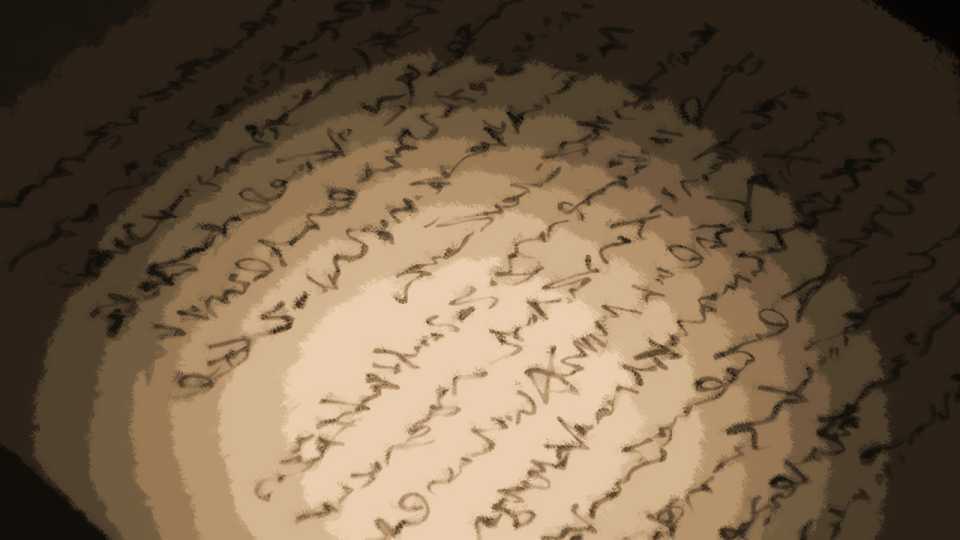

The Trumpeter of the Apocalypse ~Blooming~

Only Kana-chan and I remained in the storehouse.
I just hoped she wouldn't get in my way...
I just hoped she wouldn't get in my way...

"Haruka-chan had a really scary look on her face."
"Huh?"
"Huh?"

"Sis..."
With that, her bright smile of a moment ago was gone, and her face turned sad and lonely.
With that, her bright smile of a moment ago was gone, and her face turned sad and lonely.
"Um, what's wrong...?"
"Sis..."
"I see... You're worried about her..."
Had Kana-chan been acting cheerful on purpose, after seeing Niimura-senpai's face?
The truth was, Kana-chan must have been hurting enough to cry, too.
"Sis..."
"I see... You're worried about her..."
Had Kana-chan been acting cheerful on purpose, after seeing Niimura-senpai's face?
The truth was, Kana-chan must have been hurting enough to cry, too.
"Hey, Goto-chan, can I stay with you a little longer? I won't get in the way..."
"............ Yeah, sure."
"Goto-chan... thanks."
The corners of Kana-chan's mouth lifted, just a little.
Then Kana-chan sat down beside me.
"............ Yeah, sure."
"Goto-chan... thanks."
The corners of Kana-chan's mouth lifted, just a little.
Then Kana-chan sat down beside me.
"I really won't get in the way..."
Still, why sit by me?
Obaasan and her dad must be around too.
Still, why sit by me?
Obaasan and her dad must be around too.
"Hey, Kana-chan, do you and Chiga-nee get along?"
"Yeah... I love Sis. But... this past New Year's, we had a fight. It was the first time we ever had a fight like that. Sis and I made up when she went back to Tokyo, but..."
"I see. It hurts when you and Chiga-nee get in a fight."
"Yeah... I love Sis. But... this past New Year's, we had a fight. It was the first time we ever had a fight like that. Sis and I made up when she went back to Tokyo, but..."
"I see. It hurts when you and Chiga-nee get in a fight."
"Yeah... But now it hurts even more..."
"But the people of the settlement are looking for Chiga-nee too, right?
So I'm sure they'll find her."
"The grown-ups say 'Sis was probably curse-killed.' So it looks like they've already given up... And seeing that hurts too..."
So there's a gap between how Kana-chan feels and how the people around her feel.
If everyone treats Chiga-nee as dead, of course it hurts.
"The grown-ups say 'Sis was probably curse-killed.' So it looks like they've already given up... And seeing that hurts too..."
So there's a gap between how Kana-chan feels and how the people around her feel.
If everyone treats Chiga-nee as dead, of course it hurts.
"Sis told me. Goto-chan, you went all the way to Tokyo to hear her out, right?"
"Yeah, she said she had a problem."
"Sis was really grateful to you, Goto-chan. Up until yesterday, Sis was working so hard it looked rough on her, but somehow she seemed happy. So... thank you."
"Yeah, she said she had a problem."
"Sis was really grateful to you, Goto-chan. Up until yesterday, Sis was working so hard it looked rough on her, but somehow she seemed happy. So... thank you."
I hadn't expected to be thanked.
Chiga-nee was able to pin down the truth probably because my advice helped a little.
But when you trace it back, it's because she followed my advice that Chiga-nee disappeared.
I know well enough that blaming myself like this is wrong.
But when I see Kana-chan looking so sad...
Chiga-nee was able to pin down the truth probably because my advice helped a little.
But when you trace it back, it's because she followed my advice that Chiga-nee disappeared.
I know well enough that blaming myself like this is wrong.
But when I see Kana-chan looking so sad...
"Goto-chan, why do you look sad?"
"Huh? No... it's nothing..."
So it showed on my face...
Right now all kinds of feelings are jumbled up inside me, and I can't make sense of them.
"Huh? No... it's nothing..."
So it showed on my face...
Right now all kinds of feelings are jumbled up inside me, and I can't make sense of them.
"Hey, Goto-chan, can I call you Eri-nee?"
"Eri-nee?"
"You helped Sis, didn't you? So you're a really important person too, Goto-chan. If everyone calls Sis 'Chiga-nee,' then I'll..."
"............ Yeah... sure."
"Eri-nee?"
"You helped Sis, didn't you? So you're a really important person too, Goto-chan. If everyone calls Sis 'Chiga-nee,' then I'll..."
"............ Yeah... sure."

"Aha! Thanks, Eri-nee!"

Kana-chan threw her arms around me and hugged me tight.
"Eri-nee, thank you. You can solve the curse-killings for sure, right?
Sis will turn up too, right?"
"Yeah, it'll be fine, I'm sure. That's what we came here for."
"Oh, sorry, Eri-nee, I said I wouldn't get in the way...
"Yeah, it'll be fine, I'm sure. That's what we came here for."
"Oh, sorry, Eri-nee, I said I wouldn't get in the way...
I'll go get your dinner from the house!"
Kana-chan hurried off down the stairs.
By rights, I'd meant to keep our investigation of the curse-killings hidden from Obaasan and Kotaro-san, but now that we've gotten this much information, there's probably no need for that anymore.
They should need our help, both to solve the curse-killings and to search for Chiga-nee.
Now then... before I continue the investigation, let me sum up what we have so far.
They should need our help, both to solve the curse-killings and to search for Chiga-nee.
Now then... before I continue the investigation, let me sum up what we have so far.
There were a lot of books here.
And among them was one that caught my attention.
It was a scripture of sorts, written in Japanese.
The title reads 'The Teachings of Cerejeira'.
Chiga-nee must have brought it here as an important book for some reason.
And among them was one that caught my attention.
It was a scripture of sorts, written in Japanese.
The title reads 'The Teachings of Cerejeira'.
Chiga-nee must have brought it here as an important book for some reason.

Cerejeira―I've heard of it.
If I remember right, a regional religion called the Holy Cerejeira Church that started in Megasawa City.
It's almost died out now, apparently, but until a few decades ago it flourished enough to make Megasawa City a religious city, or so I've heard.
But this book is in a very old style; I'd guess it's at least 400 years old.
Why would a scripture of a religion born in Megasawa be in a place like this―and an old one, at that?
If I remember right, a regional religion called the Holy Cerejeira Church that started in Megasawa City.
It's almost died out now, apparently, but until a few decades ago it flourished enough to make Megasawa City a religious city, or so I've heard.
But this book is in a very old style; I'd guess it's at least 400 years old.
Why would a scripture of a religion born in Megasawa be in a place like this―and an old one, at that?
I can think of several possible reasons, but the most likely is that people from the Arata settlement started the religion in Megasawa City.
Geographically, the two aren't that far apart either, so I can safely put this forward as a hypothesis.
For now, the deduction can wait. Let me read it.
Geographically, the two aren't that far apart either, so I can safely put this forward as a hypothesis.
For now, the deduction can wait. Let me read it.
 video: 悪天候.wmv
video: 悪天候.wmvAfter a long sea voyage, Lord Sele reached this land of Japan, and the land of Arata.
For generations, Lord Sele's family had governed a colony, appointed to the task by the homeland.
Thus Lord Sele knew nothing of the homeland; this colony, it is said, was his mother country.
For generations, Lord Sele's family had governed a colony, appointed to the task by the homeland.
Thus Lord Sele knew nothing of the homeland; this colony, it is said, was his mother country.
video: 悪天候.wmvBut a calamity befell that mother country.
Trees of a hideous size grew, and bewitching flowers bloomed.
And the dead, led by the Fierce Sound, rose again in this world, and the mother country stood on the brink of ruin.
Lord Sele put as many companions aboard his ship as it could carry and barely escaped the mother country with his life.
The place he reached at last was this land of Japan, and Arata.
Trees of a hideous size grew, and bewitching flowers bloomed.
And the dead, led by the Fierce Sound, rose again in this world, and the mother country stood on the brink of ruin.
Lord Sele put as many companions aboard his ship as it could carry and barely escaped the mother country with his life.
The place he reached at last was this land of Japan, and Arata.
video: 悪天候.wmvLord Sele was a man of deep culture and learning, and his teachings soon took root among us, the people of Arata, as well.
Before long, Lord Sele had become the source of our wisdom.
Lord Sele changed his name to Ginosuke Niimura and spared nothing in offering his knowledge and research for Arata.
Before long, Lord Sele had become the source of our wisdom.
Lord Sele changed his name to Ginosuke Niimura and spared nothing in offering his knowledge and research for Arata.
video: 悪天候.wmvI see―so this is when Western culture began to mix into Arata.
But everything that supposedly happened in his mother country is strange.
Giant trees, bewitching flowers, the Fierce Sound.
There's surely no doubt that a Westerner who changed his name to Ginosuke Niimura existed, but somehow it doesn't feel real.
But everything that supposedly happened in his mother country is strange.
Giant trees, bewitching flowers, the Fierce Sound.
There's surely no doubt that a Westerner who changed his name to Ginosuke Niimura existed, but somehow it doesn't feel real.
video: 悪天候.wmvNo... the part about the dead, led by 'the Fierce Sound,' rising again in this world bothers me.
The dead coming back to life―that phenomenon was in Chiga-nee's voice memo too.
If the Fierce Sound is the trumpet-like sound we heard at Toyotake Station―
The dead coming back to life―that phenomenon was in Chiga-nee's voice memo too.
If the Fierce Sound is the trumpet-like sound we heard at Toyotake Station―
video: 悪天候.wmvIf so, this scripture is highly credible.
What's more, that Fierce Sound is said to be a sound of ruin, the kind called the apocalyptic sound or strange sounds.
Search for it online and you'll find any number of hits, so it's a phenomenon observed all over the world.
What's more, that Fierce Sound is said to be a sound of ruin, the kind called the apocalyptic sound or strange sounds.
Search for it online and you'll find any number of hits, so it's a phenomenon observed all over the world.
video: 悪天候.wmvFor now, let me read on.
video: 悪天候.wmvLord Sele, now Lord Ginosuke, kindly told us in detail of what happened in his mother country.
But Lord Ginosuke himself did not know why such a disaster had occurred, and he said his account would read like a fairy tale.
With that understood, I set it down here.
But Lord Ginosuke himself did not know why such a disaster had occurred, and he said his account would read like a fairy tale.
With that understood, I set it down here.
video: 悪天候.wmvThe beautiful trees and flowers of the mother country.
They resembled what in Japan is called the cherry, but they were also like the rose and the plum.
They seemed to be native to the mother country, and we called them Bonita.
Bonita means 'beautiful' in our tongue.
Bonita could be seen everywhere in the mother country, and they were loved.
They resembled what in Japan is called the cherry, but they were also like the rose and the plum.
They seemed to be native to the mother country, and we called them Bonita.
Bonita means 'beautiful' in our tongue.
Bonita could be seen everywhere in the mother country, and they were loved.
video: 悪天候.wmvThen one day, with a great earthquake and the sound of a hideous trumpet, Bonita changed beyond recognition into sinister forms.
The giant trees destroyed the towns and covered the whole sky.
At the same time, every tree and flower other than Bonita withered away in an instant.
The giant trees destroyed the towns and covered the whole sky.
At the same time, every tree and flower other than Bonita withered away in an instant.
video: 悪天候.wmvNor was that all. The dead came back to life and began to slaughter the people.
At first we too led armies against the army of the dead, but we could never have matched an army that could not die.
At first we too led armies against the army of the dead, but we could never have matched an army that could not die.
video: 悪天候.wmvThen, from a volcano of brimstone, there appeared four generals of the army of the dead, called divine messengers, and their demon king―Abaddon.
They seemed to command their army with that hideous trumpet.
Every time the trumpet sounded, the dead appeared, and towns and nature were destroyed.
And that trumpet rang out so loudly that no one could tell where it was sounding from.
They seemed to command their army with that hideous trumpet.
Every time the trumpet sounded, the dead appeared, and towns and nature were destroyed.
And that trumpet rang out so loudly that no one could tell where it was sounding from.
video: 悪天候.wmvMoreover, the divine messengers had cunning tongues and high intelligence, and far from merely killing us, one companion after another began to defect to the army of the dead.
Yes, our companions fell prey to suspicion feeding on itself, and in the end they began to kill one another.
Judging that the mother country could no longer be restored, I fled by ship and came at last to this land.
Yes, our companions fell prey to suspicion feeding on itself, and in the end they began to kill one another.
Judging that the mother country could no longer be restored, I fled by ship and came at last to this land.
video: 悪天候.wmvAt first I suspected even the companions aboard the ship of being spies for the army of the dead.
But to join the army of the dead, or to continue this voyage with no end in sight― when nothing remained but despair, was there any need to cast aside those who had chosen the voyage?
It was a gamble, but I chose to trust them.
But to join the army of the dead, or to continue this voyage with no end in sight― when nothing remained but despair, was there any need to cast aside those who had chosen the voyage?
It was a gamble, but I chose to trust them.
video: 悪天候.wmvIt certainly does read like a fairy tale.
But some of it overlaps with what is already happening in the Arata settlement.
Not just the dead returning and the Fierce Sound―the part about people killing each other out of suspicion, too.
But some of it overlaps with what is already happening in the Arata settlement.
Not just the dead returning and the Fierce Sound―the part about people killing each other out of suspicion, too.
video: 悪天候.wmvCome to think of it, the account of the killings in Arata 400 years ago, which Chiga-nee sent me in photos, had a similar passage.
 video: 豊岳桜.wmv
video: 豊岳桜.wmv"The Fierce Sound rang out across the heavens, and the cherry blossoms danced.
People killed one another, bathed in blood, and were cursed.
At the seventh Fierce Sound, Verde took on every sin, took her own life, and protected this land."
People killed one another, bathed in blood, and were cursed.
At the seventh Fierce Sound, Verde took on every sin, took her own life, and protected this land."
video: 豊岳桜.wmvSuppose I consider the cause of the apocalyptic sound in connection with these events.
When the Necro underground―Shigatsu Youka―makes some kind of move, a huge shift occurs below ground, and small cracks open on the surface.
Shigatsu Youka is a living thing too, so she must carry out some kind of respiratory metabolism.
When the Necro underground―Shigatsu Youka―makes some kind of move, a huge shift occurs below ground, and small cracks open on the surface.
Shigatsu Youka is a living thing too, so she must carry out some kind of respiratory metabolism.
video: 豊岳桜.wmvA fungus produces water (water vapor) and carbon dioxide when it metabolizes.
If the carbon dioxide and water vapor that Shigatsu Youka produces underground make a sound like a wind instrument as they pass through those cracks―
Let me assume that is the basic principle of the apocalyptic sound.
That would explain why the cherry tree that suddenly appeared at Toyotake Station and the apocalyptic sound came at the same moment.
If the carbon dioxide and water vapor that Shigatsu Youka produces underground make a sound like a wind instrument as they pass through those cracks―
Let me assume that is the basic principle of the apocalyptic sound.
That would explain why the cherry tree that suddenly appeared at Toyotake Station and the apocalyptic sound came at the same moment.
I read Chiga-nee's memo over once more.

The name of the 'someone' Goto-ch×× sp××× of is 'Shigatsu Youka.'
It is a giant organism that has been roo××× in this land of Ar××× for tens of thousands of years.
She is apparently clas×××××× as a fungus called the honey fungus, and she grows by plan×××× her spores in other li×××× things.
In other words, Shi×××× Youka is a par×××te.
What looks like cher×× trees is, in fact, her frui×××× body.
It is a giant organism that has been roo××× in this land of Ar××× for tens of thousands of years.
She is apparently clas×××××× as a fungus called the honey fungus, and she grows by plan×××× her spores in other li×××× things.
In other words, Shi×××× Youka is a par×××te.
What looks like cher×× trees is, in fact, her frui×××× body.
What I can read from this―
'What looks like cher×× trees is, in fact, her frui×××× body.'
'What looks like cherry trees is, in fact, her fruiting body.'
A fruiting body means a mushroom.
In other words... the Arata cherry is not a cherry at all, but part of Shigatsu Youka, disguised as one.
So Shigatsu Youka didn't just appear a moment ago; Shigatsu Youka has been out in the open all along, as the Niimura family's cherry.
This settlement has been in the palm of Shigatsu Youka's hand all along.
'What looks like cherry trees is, in fact, her fruiting body.'
A fruiting body means a mushroom.
In other words... the Arata cherry is not a cherry at all, but part of Shigatsu Youka, disguised as one.
So Shigatsu Youka didn't just appear a moment ago; Shigatsu Youka has been out in the open all along, as the Niimura family's cherry.
This settlement has been in the palm of Shigatsu Youka's hand all along.
―!!
At Toyotake Station, with this sound, a cherry tree had suddenly appeared on the tracks.
Has something happened again?
At Toyotake Station, with this sound, a cherry tree had suddenly appeared on the tracks.
Has something happened again?

The trees that had been showing off their lush green new leaves until a moment ago had withered.
How could they die all at once like this, and so suddenly...!
A trait of the honey fungus family―it extends its hyphae even into other plants, sucks out their nutrients, and withers all the vegetation in the area.
This is what is known as a plant-parasitic fungus.
How could they die all at once like this, and so suddenly...!
A trait of the honey fungus family―it extends its hyphae even into other plants, sucks out their nutrients, and withers all the vegetation in the area.
This is what is known as a plant-parasitic fungus.
What's more, Ginosuke Niimura's fairy tale contained a similar description.
Shigatsu Youka has begun to move in earnest.
Shigatsu Youka has begun to move in earnest.
Read ✓ Next in this arc →